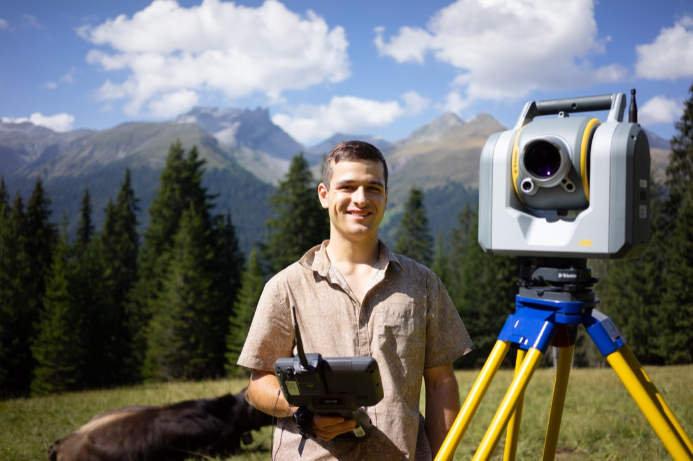

Ich bin Gian Schneider
Ich studiere Geomatik an der FHNW und interessiere mich besonders für GIS, Geodatenanalyse, Kartenvisualisierung und digitale Werkzeuge.

Während meines Studiums habe ich verschiedene Projekte zu räumlicher Datenverarbeitung, Kartenproduktion und räumlicher Analyse bearbeitet.
Zu meinen Schwerpunkten zählen unter anderem die Arbeit mit GIS-Software, die Aufbereitung von Geodaten, die Visualisierung von Ergebnissen und die Entwicklung praxisnaher Lösungen für raumbezogene Fragestellungen.
Schwerpunkte
- GIS- und Kartierungsprojekte
- Geodatenanalyse und Visualisierung
- Digitale Präsentation von Projektergebnissen
Diese Website dient dazu, meine wichtigsten Arbeiten kompakt und anschaulich zu präsentieren.
Persönliche Einblicke & Reisen
Neben meinem Studium und meiner Arbeit bin ich gerne unterwegs und entdecke die Welt. Hier sind vier kurze Videos von meinen Reisen: